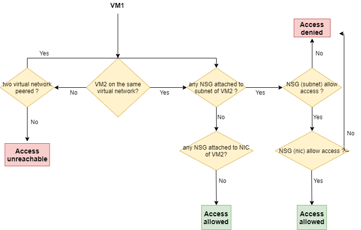
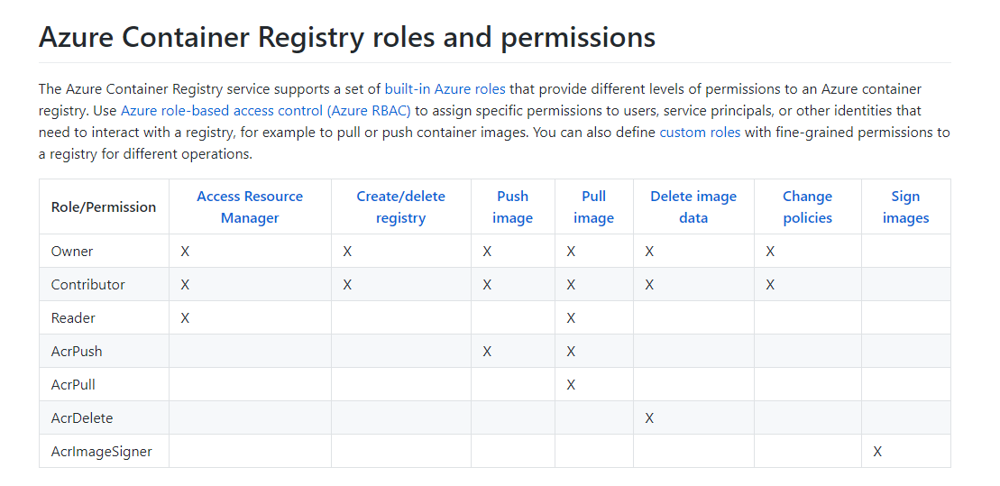
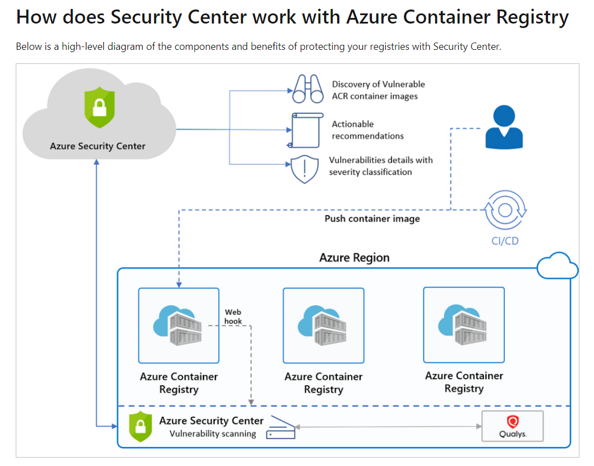
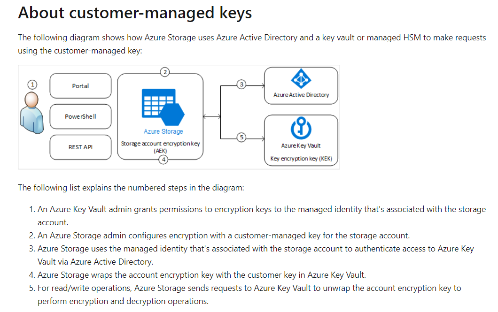

Yesterday, I have passed the Azure Security Engineer Associate exam (AZ-500) after two months of preparation. It’s quite tricky but I learned a lot from this exam 😊
In this article, I would like to share with you some important points considering the mentioned exam.
Exam’s Format:
- 51 questions (with an important part of lab questions)
- 1 case study (4 questions in general)
- 180 minutes
- skills measured: link
Preparation Guide:
- Microsoft Learning is your good friend: link
- Also, Stanislas Quastana (Microsoft’s Cloud Solution Architect) wrote a great article on his blog in concern of this exam: link
Exam’s Content with highlight:
ATTENTION: the exam’s content is subject to change anytime! In the below section, I have just highlighted some particular topics which were covered in my exam.
-
Case study:
-
Some questions about identifying the group membership based on dynamic rules
-
Some questions about analyzing the network traffic between Virtual Network with Network Security Group and Application Security Group
Please find below the tree of decision for the inbound traffic from VM1 to VM2:

-
Remember:
*If two virtual networks are not peered at each other (in two ways), the traffic is unreachable.
*The Network Security Group can be attached to subnet (subnet level) and/or can be also attached to Network Interface Card (NIC, vm level). Make sure that you evaluated the network traffic at the level to which the NSG is attached.
-
Manage identity and access (30-35%)
- Manage Azure Active Directory identities:
- Dynamic membership rules for Azure AD groups:
- Supported expression operators (contains or match)
- More information: link
- Manage Azure AD groups and Azure AD users
- Understand some basic Azure AD roles:
- Global Administrator
- Billing Administrator
- Security Administrator
- Application Developer
- Understand the differences between the authentication methods:
- Password Hash
- Pass Through Authentication (PTA)
- OAuth
- Transfer Azure Subscription Ownership between Azure AD tenants:
- In order to transfer the ownership, you must sign in to Azure as Billing Administrator
- You are able to transfer the subscription’s ownership to an organizational account on the same Azure AD Tenant or on another Azure AD Tenant
- You can use Azure Account Center to help you to complete the transfer: link
- Dynamic membership rules for Azure AD groups:
- Configure secure access by using Azure AD:
- Azure AD Privileged Identity Managment (PIM):
- Eligible role
- Permanent role
- Active role
- PIM can be used to elevate access to the privileged role including almost Azure AD roles and some Azure Ressources role (Owner, Contributor, User Access Administrator and Security Admin)
- Activate and configure PIM: you need the Global Administrator role to do so.
- MFA: conditional access
- Configure Azure AD identity protection:
- user risks (block access or change user password)
- sign-in risks (block access or require MFA)
- Configure Azure AD identity protection
- Azure AD Privileged Identity Managment (PIM):
- Manage application access:
- Create App Registration:
- In order to allow the user to create/register app registrations, the option Users can register applications of User settings need to be set to Yes
- Otherwise, you received access denied. As consequence, you need Application Developer role to be able to do so
- Delegated permissions vs application permissions:
- delegated permissions allow application to act on behalf of signed-in user
- application permissions used by application run in the background (a service or a daemon), without a signed-in user
- 3 steps to do:
- create an app registration
- configure the permissions (delegated permissions or application permissions)
- grant these permissions to the application.
- Create App Registration:
- Manage access control:
- Identify the appropriate role
- Configure custom RBAC roles: the property AssignableScopes defines where your custom roles will be applied. The property Actions contains an array of permissions that custom role use to do asked administrative operations.
- To operate on virtual machines, the custom role may need to have one or more permissions of Microsoft.Compute/
- To operate on a storage account, the custom role may need to have one or more permissions of Microsoft.Storage/
- To configure a network, the custom role may need to have one or more permissions of Microsoft.Network/
- More information: please refer to this documentation
- Manage Azure Active Directory identities:
-
Implement platform protection (15-20%)
- Implement advanced network security:
- Understand Network Security Group and Application Security Group
- User Defined Route (UDR)
- Azure Application Gateway:
- You need to activate the feature Web Application Firewall in order to protect your applications in case of attack.
- More information: link
- Configure advanced security for compute:
- Configure authentication for Azure Container Registry
- Configure security for container registry
- Configure authentication and security for Azure App Service
- Understand some Azure Container Registry (ACR) roles: ArcPush, ArcPull, ArcDelete, ArcImageSigner 
- ACR image scanning requires the Azure Security Centers’s standard tier enabled
- ACR image scanning is only available for Linux images (not Windows images) 
- More information: link
- Implement advanced network security:
-
Manage security operations (25-30%)
- Monitor security by using Azure Monitor
- Differentiate between metric, log, activity log
- Identify user deleted a vm 30 days ago: Activity Log
- Identify security events: Logs
- create and customize alerts with Azure Monitor
- Differentiate between metric, log, activity log
- Monitor security by using Azure Security Center
- Just in Time (JIT) VM access requires Azure AD P1 licensing at minima
- JIT is used to give access to VM with a limited amount of time
- When JIT VM access is enabled, an NSG rule will be created by default in an NSG attached to VM allowing traffic on port 3389. This rule allows the Remote Desktop Protocol (RDP) connections
- Create some workflows in Azure Security Center. These workflows are based on Azure Logic Apps component
- Monitor security by using Azure Sentinel
- Create alerts using Azure Sentinel Playbook. This playbook is based on Azure Logic Apps component
- Azure Sentinel can connect to many data sources using data connectors (Azure AD, Azure Security Center, on-premise data, AWS, …). Azure Sentinel ingest all data from different data sources into a Log Analytic Workspace. From there, you can create some analytic rules to detect threats using Kusto query language.
- Create and customize alerts
- Configure data sources to Azure Sentinel
- Configure security policies
- Azure Policy vs Azure Blueprint
- Steps to create and publish a blueprint
- Create a new blueprint definition
- Publish a blueprint version (or Mark blueprint as Published)
- Assign the blueprint to an existing subscription
- Monitor security by using Azure Monitor
-
Secure data and applications (20-25%)
- Configure security for storage
- Manage shared access signatures (SAS), Create a store access policy. If your account is compromised, you could revoke the access by creating a new SAS or a new store access policy
- Customer-managed keys for Azure Storage encryption: all azure storage services (Azure Blob, Azure Files, Azure Queue and Azure Table) supports custom-managed keys for Azure Storage Encryption.
- Data in Blob storage and Azure Files is always protected by customer-managed keys when customer-managed keys are configured for the storage account
- Data stored in Queue and Table storage is not automatically protected by a customer-managed key when customer-managed keys are enabled for the storage account. You can optionally configure these services to be included in this protection at the time that you create the storage account 
- More information: link
- Configure security for databases
-
Configure Azure SQL Database Advanced Threat Protection (ATP): ATP detects anomalous activities indicating unusual and potentially harmful attempts to access or exploit databases like SQL Injection, access from unusual location or data center and brute force SQL credentials
-
Implement database encryption: Transparent Data Encryption (TDE) with customer-managed key stored in Azure Key Vault. Four steps to do:
- Assign an Azure AD identity to Azure Sql Server
Set-AzSqlServer -ResourceGroupName <SQLDatabaseResourceGroupName> -ServerName <LogicalServerName> -AssignIdentity- Grant Key Vault permissions to server
Set-AzKeyVaultAccessPolicy -VaultName <KeyVaultName> -ObjectId $server.Identity.PrincipalId -PermissionsToKeys get, wrapKey, unwrapKey- Add the Key Vault key to the server
Add-AzSqlServerKeyVaultKey -ResourceGroupName <SQLDatabaseResourceGroupName> -ServerName <LogicalServerName> -KeyId <KeyVaultKeyId>- Set the TDE Protector
Set-AzSqlServerTransparentDataEncryptionProtector -ResourceGroupName <SQLDatabaseResourceGroupName> -ServerName <LogicalServerName> -Type AzureKeyVault -KeyId <KeyVaultKeyId> -
Implement Azure SQL Database Always Encrypted
-
- Configure and manage Key Vault
- Configure RBAC usage in Azure Key Vault (Contributor, Key Vault Contributor): allows to modify Key Vault’s properties (tags for example)
- Manage permissions to secrets, certificates and keys: you need to configure Access Policies. RBAC role cannot manage these permissions
- Soft-delete feature: protect from data loss accidental key deletion happens. Soft-deleted resources are retained for 90 days.
- Configure security for storage
Last but not least. Practice! Practice and Practice!
I hope you found some useful information. Good luck!